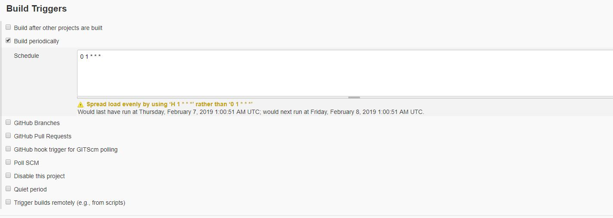
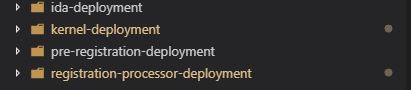

Getting Started¶
1. Getting the Source Code [↑]¶
Knowledge of Linux and Azure with Kubernetes are required to follow the instructions. MOSIP source code can be obtained via creating a fork of mosip-platform Github repository from the URL. To know more about how to fork code from Github follow this guide. Once Forked, start the process of setting up your CI/CD tools to build and run MOSIP.
NOTE MOSIP configuration has been seperated from the source code. For running the source code, you will be needing a fork of mosip-config repository from this URL. All the configuration files will be stored under config-templates folder under this repository.
2. Setup and Configure Jenkins [↑]¶
In this step, we will setup jenkins and configure it. Configuration contains steps like creating credentials, creating pipelines using xml files present in MOSIP source code, connecting Jenkins to recently forked repository and creating webhooks. Lets look at these steps one by one -
A. Installing Jenkins version 2.150.1¶
Jenkins installation is standard(see How to install Jenkins), but to use MOSIP supported build pipelines you have to install Jenkins in an Redhat 7.6 environment. The prerequisite for installing Jenkins is you should have java already installed and path for JAVA_HOME is also set. Also the following plugins have to be installed list of plugins -
Once the plugin installation is complete, run this command in Jenkins Script Console -
System.setProperty("hudson.model.DirectoryBrowserSupport.CSP", "")
This above command modifies Content Security Policy in Jenkins to enable loading of style and javascript for HTML Reports.
B. Setting Up Github for/in Jenkins¶
Setting up Github for/in Jenkins involves putting the Jenkins Webhook url in Github Repo so that Github can inform Jenkins for push events(look at Webhooks and Github hook). After hooks are in place, setup Github credentials inside Jenkins, so that on webhook event our pipeline can checkout the code from Github. To set up Github Credentials, follow these steps -
I. Goto Jenkins
II. Goto Credentials -> System
III. Goto Global credentials
IV. Click on Add Credentials
V. Now use following details
Kind=Username with password
Scope=Global (Jenkins, nodes, items, all child items, etc)
Username=<Your Github Username>
Password=<Your Github Password>
ID=Some Unique Identifier to refer to this credentials (to autogenerate this, leave this blank)
Description=<It is optional>
VI. Now since our Jenkinsfile usage this github credentials, update the credentials id in the Jenkinsfile.
C. Create Pipelines¶
Next step after Jenkins installation is to configure/create Jenkins Jobs. These Jenkins Jobs are written as Jenkins Pipelines and respective Jenkinsfile in URL. MOSIP currently has 5 Jenkins jobs that take care of CI/CD process for Development Environment. They are -
master-branch-build-all-modules
Jenkinsfile for master-branch-build-all-modules can be found in URL, named MasterJenkinsfile
This Job is used to build MOSIP as a single unit. This Job also acts like a nightly process to check the build status of MOSIP code in Master Branch. To create this Job you need to create a new Item in Jenkins as a Pipeline Project. Here is the configuration for Pipeline you might have to explicitly change to use MOSIP provided Jenkinsfile-

As it can be seen from the above image this pipeline uses Jenkinsfile present in master branch of mosip-platform repository. You need to provide the Github credentials that this pipeline will take to connect and download this Jenkinsfile at the time of the build. Let us now look into this Jenkinsfile.
Jenkinsfile for this pipeline is written in Groovy Language using the scripted style of writing code.
Then we have module specific Jenkinsfile for individual Modules. These Modules are:
Kernel
Registration
Registration-Processor
Pre-Registration
ID-Repository
ID-Authentication
Each Module's CI/CD Jenkins script can be found in URL. This Jenkins script will be named Jenkinsfile and is responsible to build and deploy the entire Module to Dev environment
For promoting these modules to QA, there is a pipeline named PromoteToQAJenkinsFile which is located in root directory of mosip source code. This pipeline tags the entire code, runs build process, and once everything is successful, it deploys the entire code to QA environment.
In each Jenkinsfile you will see some variables starting with params. These variables are passed as parameters into the Jenkins jobs. You have to setup these parameters variables in your jenkins to use these Jenkinsfiles. These Variables include:
NOTE-> To set up parameters for a jenkins job, go inside the jenkins job-> Click Configure->Click on "This project is parameterized" and provide the parameter name and value.
BRANCH_NAME
REGISTRY_URL
REGISTRY_NAME
REGISTRY_CREDENTIALS
GIT_URL
GIT_CREDENTIALS
BUIILD_OPTION
NOTE We are building docker images in each of the JenkinsFile, so docker should be installed and accessible for Jenkins user. Please install Docker version 18.09.3 in your Jenkins instance.
3. Setup and Configure Jfrog Artifactory Version 6.5.2 [↑]¶
For installing and setting up Jfrog, following steps here need to be followed.
Once the setup is complete, please add the following remote repositories to your Jfrog configuration and point them to libs-release virtual repository:
To configure Maven to resolve artifacts through Artifactory you need to modify the settings.xml of Jenkins machine's m2_home to point to JFrog.
To generate these settings, go to Artifact Repository Browser of the Artifacts module, select Set Me Up. In the Set Me Up dialog, set Maven in the Tool field and click "Generate Maven Settings". For more information on artifactory configuration refer here
NOTE JFrog Artifactory setup by MOSIP is open to public for read only access. So if any of the modules are dependent on previous modules, that you don't have built, you need to connect to our JFrog server to pull those dependencies. For doing that, in the settings.xml file that you generated above, replace url of ID with repository snapshot and release to our Jfrog URLs which will be :
<url>http://<abcd>.mosip.io/artifactory/libs-snapshot</url>for libs-snapshot<url>http://<abcd>.mosip.io/artifactory/libs-release</url>for libs-release
Once you are done with pulling the dependencies you need, you can replace it back to your Jfrog URLs.
Also if you are planning to import all versions of the Mosip modules in Jfrog to your VM or Jfrog, make sure you have enough space in your Jfrog VM where you will be importing these dependencies.
4. Setup and Configure SonarQube version 7.3 [↑]¶
SonarQube server can be setup by following single instructions given here.
For configuring SonarQube with Jenkins, steps given here can be followed.
Steps to install SonarQube on Ubuntu 16.04
** Perform a system update**
* sudo apt-get update
* sudo apt-get -y upgrade
** Install JDK**
* sudo add-apt-repository ppa:webupd8team/java
* sudo apt-get update
* sudo apt install oracle-java8-installer
We can now check the version of Java by typing:
* java -version
** Install and configure PostgreSQL**
* sudo sh -c 'echo "deb http://apt.postgresql.org/pub/repos/apt/ `lsb_release -cs`-pgdg main" >>
/etc/apt/sources.list.d/pgdg.list'
* wget -q https://www.postgresql.org/media/keys/ACCC4CF8.asc -O - | sudo apt-key add -
* sudo apt-get -y install postgresql postgresql-contrib
Start PostgreSQL server and enable it to start automatically at boot time by running:
* sudo systemctl start postgresql
* sudo systemctl enable postgresql
Change the password for the default PostgreSQL user.
* sudo passwd postgres
Switch to the postgres user.
* su - postgres
Create a new user by typing:
* createuser sonar
Switch to the PostgreSQL shell.
* psql
Set a password for the newly created user for SonarQube database.
* ALTER USER sonar WITH ENCRYPTED password 'StrongPassword';
Create a new database for PostgreSQL database by running:
* CREATE DATABASE sonar OWNER sonar;
Exit from the psql shell:
* \q
Switch back to the sudo user by running the exit command.
** Download and configure SonarQube**
* wget https://sonarsource.bintray.com/Distribution/sonarqube/sonarqube-6.4.zip
Install unzip by running:
* apt-get -y install unzip
Unzip the archive using the following command.
* sudo unzip sonarqube-6.4.zip -d /opt
Rename the directory:
* sudo mv /opt/sonarqube-6.4 /opt/sonarqube
* sudo nano /opt/sonarqube/conf/sonar.properties
Find the following lines.
#sonar.jdbc.username=
#sonar.jdbc.password=
Uncomment and provide the PostgreSQL username and password of the database that we have created earlier. It should look like:
sonar.jdbc.username=sonar
sonar.jdbc.password=StrongPassword
Next, find:
#sonar.jdbc.url=jdbc:postgresql://localhost/sonar
Uncomment the line, save the file and exit from the editor.
** Configure Systemd service**
SonarQube can be started directly using the startup script provided in the installer package. As a matter of convenience, you should setup a Systemd unit file for SonarQube.
* nano /etc/systemd/system/sonar.service
Populate the file with:
[Unit]
Description=SonarQube service
After=syslog.target network.target
[Service]
Type=forking
ExecStart=/opt/sonarqube/bin/linux-x86-64/sonar.sh start
ExecStop=/opt/sonarqube/bin/linux-x86-64/sonar.sh stop
User=root
Group=root
Restart=always
[Install]
WantedBy=multi-user.target
Start the application by running:
* sudo systemctl start sonar
Enable the SonarQube service to automatically start at boot time.
* sudo systemctl enable sonar
To check if the service is running, run:
* sudo systemctl status sonar
5. Setup and Configure Docker Registry [↑]¶
In this step we will setup and configure a private docker registry, which will be basic authenticated, SSL secured. In our setup we are using azure blobs as storage for our docker images. More options for configuring registry can be found here
We are deploying Docker registry as Containerized services. For setting up the registry, Docker and Docker Compose need to be installed. We have setted up the registry in a machine with Redhat 7.6 installed.
Once installation is done, the yaml files which we will be using to setup the registry can be found in this link
We are using Registry image : registry:2.5.1, registry with any other version can be deployed from here.
For routing purpose, we are using HAproxy image dockercloud/haproxy:1.6.2, other options such as ngnix etc. can also be used for the same purpose.
We have the following docker-compose files, under this link
registry-docker-compose.yml: For basic registry and haproxy setup.
registry-docker-compose-basic-authentication.yml: For securing the docker registry through base authentication. For basic authentication, you have to setup a htpasswd file and add a simple user to it. For generating this htpaswd file:
Create Htpasswd_dir directory
mkdir -p ~/htpasswd_dirCreate htpasswd file with your username and password
docker run --rm --entrypoint htpasswd registry:2 -Bbn <username> "<password>" > ~/htpasswd_dir/htpasswdIn the registry-docker-compose-basic-authentication.yml file, replace
and with specific values.
registry-docker-compose-azure-storage.yml: This file is used for configuring azure blob storage. We are assuming that Azure blob has already been configured by you. Replace REGISTRY_STORAGE_AZURE_ACCOUNTNAME, REGISTRY_STORAGE_AZURE_ACCOUNTKEY, REGISTRY_STORAGE_AZURE_CONTAINER with appropriate values configured by you while setting up azure blob storage.
registry-docker-compose-tls-enabled.yml: We are using Let's Encrypt, CA signed SSL certificates. Documentation of Let's Encrypt can be referred here Once Certificates have been generated, replace the <REGISTRY_HTTP_TLS_CERTIFICATE> property and <REGISTRY_HTTP_TLS_KEY> property in registry-docker-compose-tls-enabled.yml with appropriate values. After completing all the above changes, use docker-compose tool to bring up the container using the following command:
docker-compose -f registry-docker-compose.yml -f registry-docker-compose-basic-authentication.yml -f registry-docker-compose-azure-storage.yml -f registry-docker-compose-tls-enabled.yml up -d
Once the registry is up and running, variables registryUrl, registryName, registryCredentials can be configured accordingly in Jenkinsfile.
For configuring registry Credentials in Jenkins, Username/Password credentials need to be added in Jenkins Global Credentials and credential ID needs to be provided in registryCredentials variable in all the Jenkinsfiles.
6. Installing External Dependencies [↑]¶
6.1 Install and use PostgreSql Version 10.2 on RHEL 7.5¶
Often simply Postgres, is an object-relational database management system (ORDBMS) with an emphasis on extensibility and standards compliance. It can handle workloads ranging from small single-machine applications to large Internet-facing applications (or for data warehousing) with many concurrent users Postgresql Prerequisites On a Linux or Mac system, you must have superuser privileges to perform a PostgreSQL installation. To perform an installation on a Windows system, you must have administrator privileges.
Steps to install Postgresql in RHEL-7.5¶
Download and install PostgreSQL.¶
$ sudo yum install https://download.postgresql.org/pub/repos/yum/10/redhat/rhel-7-x86_64/pgdg-redhat10-10-2.noarch.rpm
$ sudo yum-config-manager --disable pgdg95
checking the postgresql packages¶
$ sudo yum update
$ sudo yum list postgresql*
##### Installation command
$ sudo yum install postgresql10 postgresql10-server
$sudo /usr/pgsql-10/bin/postgresql-10-setup initdb
$sudo systemctl enable postgresql-10
##### Postgresql service stop/start/restart command
$ sudo systemctl start postgresql-10
$ sudo systemctl status postgresql-10
$ sudo systemctl stop postgresql-10
To changing default port 5432 to 9001 and connection + buffer size we need to edit the postgresql.conf file from below path
PostgreSQL is running on default port 5432.
you decide to change the default port, please ensure that your new port number does not conflict with any services running on that port.
##### Steps to change the default port :
###### Open the file and modify the below changes
$ sudo vi /var/lib/pgsql/10/data/postgresql.conf
listen_addresses = '*' (changed to * instead of local host )
port = 9001 ( uncomment port=5432 and change the port number
###### Open the port 9001 from the VM
$ sudo firewall-cmd --zone=public --add-port=9001/tcp --permanent
$ sudo firewall-cmd --reload
To increase the buffer size and number of postgreSql connection same fine modify the below changes also¶
$ sudo vi /var/lib/pgsql/10/data/postgresql.conf
unix_socket_directories = '/var/run/postgresql, /tmp'
max_connections = 1000
shared_buffers = 2GB
$ sudo systemctl start postgresql-10
To change the default password¶
Login to postgrsql
$ sudo su postgres
bash-4.2$ psql -p 9001
postgres=# \password postgres
Enter new password:
Enter it again:
postgres=# \q
sudo systemctl restart postgresql-10
It will ask new password to login to postgresql
####### example for sourcing the sql file form command line
$ psql --username=postgres --host=<server ip> --port=9001 --dbname=postgres
Open the file
$ sudo vim /var/lib/pgsql/10/data/pg_hba.conf
Default lines are present in pg_hab.conf file
¶
TYPE DATABASE USER ADDRESS METHOD
local all all peer
host all all 127.0.0.1/32 ident
host all all ::1/128 ident
local replication all peer
host replication all 127.0.0.1/32 ident
host replication all ::1/128 ident
Modify with below changes in file /var/lib/pgsql/10/data/pg_hba.conf¶
local all all md5
host all all 127.0.0.1/32 ident
host all all 0.0.0.0/0 md5
host all all ::1/128 ident
local replication all peer
host replication all 127.0.0.1/32 ident
host replication all ::1/128 ident
sudo systemctl restart postgresql-10
sudo systemctl status postgresql-10
Reference link: https://www.tecmint.com/install-postgresql-on-centos-rhel-fedora
6.2 Install and use Nginx Version-1.15.8 on RHEL 7.5¶
We are using nginx for webserver andalso proxy server for MOSIP project Create the file named /etc/yum.repos.d/nginx.repo using a text editor such as vim command
$ sudo vi /etc/yum.repos.d/nginx.repo
Append following for RHEL 7.5
[nginx]
name=nginx repo
baseurl=http://nginx.org/packages/mainline/rhel/7/$basearch/
gpgcheck=0
enabled=1
After updating repo, please run following commands to install and enable nginx -
$ sudo yum update
$ sudo yum install nginx
$ sudo systemctl enable nginx
To start, stop, restart or get status of nginx use the following commands -
$ sudo systemctl start nginx
$ sudo systemctl stop nginx
$ sudo systemctl restart nginx
$ sudo systemctl status nginx
To edit files use a text editor such as vi
$ sudo vi /etc/nginx/nginx.conf
Example to configure the nginx for dev environment -
user madmin;
worker_processes 2;
error_log /var/log/nginx/error.log warn;
pid /var/run/nginx.pid;
events {
worker_connections 1024;
}
http {
include /etc/nginx/mime.types;
default_type application/octet-stream;
log_format main '$remote_addr - $remote_user [$time_local] "$request" '
'$status $body_bytes_sent "$http_referer" '
'"$http_user_agent" "$http_x_forwarded_for"';
access_log /var/log/nginx/access.log main;
client_max_body_size 10m;
sendfile on;
tcp_nopush on;
proxy_max_temp_file_size 0;
sendfile_max_chunk 10m;
keepalive_timeout 65;
gzip on;
gzip_disable "msie6";
gzip_vary on;
gzip_proxied any;
gzip_comp_level 6;
gzip_buffers 16 8k;
gzip_http_version 1.1;
gzip_min_length 256;
gzip_types text/plain text/css application/json application/x-javascript text/xml application/xml application/javascript application/octet-stream application/xml+rss text/javascript application/vnd.ms-fontobject application/x-font-ttf font/opentype image/svg+xml image/x-icon image/png image/jpg;
#include /etc/nginx/conf.d/*.conf;
###### HTTP configuration ######
server {
listen 80 default_server;
listen [::]:80 default_server ipv6only=on;
server_name <your-domain-name>;
location / {
root /usr/share/nginx/html;
index index.html index.htm;
proxy_http_version 1.1;
proxy_set_header Upgrade $http_upgrade;
proxy_set_header Connection "upgrade";
proxy_set_header Host $host;
proxy_connect_timeout 3600s;
proxy_send_timeout 3600s;
proxy_read_timeout 3600s;
}
return 301 https://$host$request_uri;
}
###### HTTPS configuration for your domain ######
server {
client_max_body_size 20M;
listen *:443 ssl http2;
listen [::]:443 ssl http2;
server_name dev.mosip.io;
ssl on;
ssl_certificate <your-letsencrypt-fullchainpem-path>;
ssl_certificate_key <your-letsencrypt-privatekey-pem-path>;
location /v1/keymanager/ {
proxy_set_header Host $host;
proxy_set_header X-Real-IP $remote_addr;
proxy_set_header X-Forwarded-For $proxy_add_x_forwarded_for;
proxy_set_header X-Forwarded-Proto $scheme;
#proxy_set_header Cookie $http_cookie;
proxy_pass http://<your-keymanager-vm-ip>:<port>/v1/keymanager/;
}
location /registrationprocessor/v1/packetreceiver/ {
proxy_set_header Host $host;
proxy_set_header X-Real-IP $remote_addr;
proxy_set_header X-Forwarded-For $proxy_add_x_forwarded_for;
proxy_set_header X-Forwarded-Proto $scheme;
proxy_pass http://<your-dmz-vm-ip>:<port>/registrationprocessor/v1/packetreceiver/;
}
location /registrationprocessor/v1/registrationstatus/ {
proxy_set_header Host $host;
proxy_set_header X-Real-IP $remote_addr;
proxy_set_header X-Forwarded-For $proxy_add_x_forwarded_for;
proxy_set_header X-Forwarded-Proto $scheme;
proxy_pass http://<your-dmz-vm-ip>:<port>/registrationprocessor/v1/registrationstatus/;
}
location / {
proxy_set_header Host $host;
proxy_set_header X-Real-IP $remote_addr;
proxy_set_header X-Forwarded-For $proxy_add_x_forwarded_for;
#proxy_set_header X-Forwarded-Host $proxy_add_x_forwarded_for;
proxy_set_header X-Forwarded-Proto $scheme;
proxy_connect_timeout 3600s;
proxy_send_timeout 3600s;
proxy_read_timeout 3600s;
proxy_pass https://<your-dev-k8-cluster-endpoint>; //kubernetes end point
#proxy_intercept_errors on;
#error_page 301 302 307 = @handle_redirects;
}
}
}
Use below command to open the port 80/443 from RHEL 7.5 VM
$ sudo firewall-cmd --zone=public --add-port=80/tcp --permanent
$ sudo firewall-cmd --zone=public --add-port=443/tcp --permanent
$ sudo firewall-cmd --reload
Generate SSL/TLS for HTTPS -¶
RHEL 7 version, these are the following commands you have to run to generate certificates for nginx server.
wget https://dl.fedoraproject.org/pub/epel/epel-release-latest-7.noarch.rpm It will install EPEL script for RHEL 7 OS. It is same as PPA for Ubuntu, it will install some extra packages for enterprise linux edition. You can read more about it https://fedoraproject.org/wiki/EPEL.
This command will run the EPEL install scripts and enable the EPEL packages for RHEL7
sudo yum install epel-release-latest-7.noarch.rpm
This will list all the EPEL packages available for used.
yum --disablerepo="*" --enablerepo="epel" list available
Check for python2-certbot-nginx package in EPEL Packages.
yum --disablerepo="*" --enablerepo="epel" search python2-certbot-nginx
This will install python certbot for nginx into VM.
sudo yum install python2-certbot-nginx
This will generate the certificate for VM.
sudo certbot --nginx certonly
Troubleshooting: If you facing getting this issue in nginx
(13: Permission denied) while connecting to upstream:[nginx]
Please run below command -
$sudo setsebool -P httpd_can_network_connect 1
or refer link -
https://stackoverflow.com/questions/23948527/13-permission-denied-while-connecting-to-upstreamnginx
Note: Certficates will be generated at, /etc/letsencrypt/live/<domain_name>/ directory. cert.pem is the certificate and privkey.pem is private key. We are using Let's Encrypt, CA signed SSL certificates. Documentation of Let's Encrypt can be referred here
6.3 Clam AntiVirus Version 0.101.0¶
ClamAV is a free, cross-platform and open-source antivirus software toolkit able to detect many types of malicious software, including viruses.
Steps to install ClamAV in RHEL-7.5¶
To install clamAV first we need to install EPEL Repository:
$ sudo yum install -y https://dl.fedoraproject.org/pub/epel/epel-release-latest-7.noarch.rpm
After that we need to install ClamAV and its related tools.
$ yum -y install clamav-server clamav-data clamav-update clamav-filesystem clamav clamav-scanner-systemd clamav-devel clamav-lib clamav-server-systemd
After completion of above steps, we need to configure installed ClamAV. This can be done via editing /etc/clamd.d/scan.conf. In this file we have to remove Example lines. So that ClamAV can use this file's configurations. We can easily do it via running following command -
$ sed -i '/^Example/d' /etc/clamd.d/scan.conf
Another thing we need to do in this file is to define our TCP server type. Open this file using -
$ vim /etc/clamd.d/scan.conf
here this we need to uncomment line with #LocalSocket /var/run/clamd.scan/clamd.sock. Just remove # symbol from the beginning of the line.
Now we need to configure FreshClam so that it can update ClamAV db automatically. For doing that follow below steps -
First create a backup of original FreshClam Configuration file -
$ cp /etc/freshclam.conf /etc/freshclam.conf.bak
In this freshclam.conf file, Here also we need to remove Example line from the file. Run following command to delete all Example lines-
$ sed -i '/^Example/d' /etc/freshclam.conf
Test freshclam via running-
$ freshclam
After running above command you should see an output similar to this -
ClamAV update process started at Thu May 23 07:25:44 2019
.
.
.
.
main.cvd is up to date (version: 58, sigs: 4566249, f-level: 60, builder: sigmgr)
Downloading daily-25584.cdiff [100%]
daily.cld updated (version: 25584, sigs: 1779512, f-level: 63, builder: raynman)
bytecode.cld is up to date (version: 331, sigs: 94, f-level: 63, builder: anvilleg)
Database updated (6345855 signatures) from database.clamav.net (IP: 104.16.218.84)
We will create a service of freshclam so that freshclam will run in the daemon mode and periodically check for updates throughout the day. To do that we will create a service file for freshclam -
$ vim /usr/lib/systemd/system/clam-freshclam.service
And add below content -
[Unit]
Description = freshclam scanner
After = network.target
[Service]
Type = forking
ExecStart = /usr/bin/freshclam -d -c 4
Restart = on-failure
PrivateTmp = true
RestartSec = 20sec
[Install]
WantedBy=multi-user.target
Now save and quit. Also reload the systemd daemon to refresh the changes -
$ systemctl daemon-reload
Next start and enable the freshclam service -
$ systemctl start clam-freshclam.service
$ systemctl enable clam-freshclam.service
Now freshclam setup is complete and our ClamAV db is upto date. We can continue setting up ClamAV. Now we will copy ClamAV service file to system service folder.
$ mv /usr/lib/systemd/system/clamd@.service /usr/lib/systemd/system/clamd.service
Since we have changed the name, we need to change it at the file that uses this service as well -
$ vim /usr/lib/systemd/system/clamd@scan.service
Remove @ symbol from .include /lib/systemd/system/clamd@.service line and save the file.
We will edit Clamd service file now -
$ vim /usr/lib/systemd/system/clamd.service
Add following lines at the end of clamd.service file.
[Install]
WantedBy=multi-user.target
And also remove %i symbol from various locations (ex: Description and ExecStart options). Note that at the end of the editing the service file should look something like this -
[Unit]
Description = clamd scanner daemon
Documentation=man:clamd(8) man:clamd.conf(5) https://www.clamav.net/documents/
# Check for database existence
# ConditionPathExistsGlob=@DBDIR@/main.{c[vl]d,inc}
# ConditionPathExistsGlob=@DBDIR@/daily.{c[vl]d,inc}
After = syslog.target nss-lookup.target network.target
[Service]
Type = forking
ExecStart = /usr/sbin/clamd -c /etc/clamd.d/scan.conf
Restart = on-failure
[Install]
WantedBy=multi-user.target
Now finally start the ClamAV service.
$ systemctl start clamd.service
If it works fine, then enable this service and test the status of ClamAV service -
$ systemctl enable clamd.service
$ systemctl status clamd.service
Now in MOSIP we require ClamAV to be available on Port 3310. To expose ClamAV service on Port 3310, edit scan.conf
$ vi /etc/clamd.d/scan.conf
and Uncomment #TCPSocket 3310 by removing #. After that restart the clamd@scan service -
$ systemctl restart clamd@scan.service
Since we are exposing ClamAV on 3310 port, we need to allow incoming traffic through this port. In RHEL 7 run below command to add firewall rule -
$ sudo firewall-cmd --zone=public --add-port=3310/tcp --permanent
$ sudo firewall-cmd --reload
6.4 Steps to Install and configuration CEPH¶
NOTE: Required only if CEPH is used for packet storage. Ceph is an open source software that provides massively scalable and distributed data store. It provides highly scalable object, block and file based storage under a unified system.
1. On Red Hat Enterprise Linux 7, register the target machine with subscription-manager, verify your subscriptions, and enable the “Extras” repository for package dependencies. For example:¶
$ sudo subscription-manager repos --enable=rhel-7-server-extras-rpms
2. Install and enable the Extra Packages for Enterprise Linux (EPEL) repository:¶
$ sudo yum install -y https://dl.fedoraproject.org/pub/epel/epel-release-latest-7.noarch.rpm
3. Add the Ceph repository to your yum configuration file at /etc/yum.repos.d/ceph.repo with the following command. Replace {ceph-stable-release} with a stable Ceph release (e.g., luminous.) For example:¶
cat << EOM > /etc/yum.repos.d/ceph.repo
[ceph-noarch]
name=Ceph noarch packages
baseurl=https://download.ceph.com/rpm-{ceph-stable-release}/el7/noarch
enabled=1
gpgcheck=1
type=rpm-md
gpgkey=https://download.ceph.com/keys/release.asc
EOM
4. Update your repository and install ceph-deploy:¶
$ sudo yum update
$ sudo yum install ceph-deploy
CEPH NODE SETUP¶
The admin node must have password-less SSH access to Ceph nodes. When ceph-deploy logs in to a Ceph node as a user, that particular user must have passwordless sudo privileges.
INSTALL NTP¶
We recommend installing NTP on Ceph nodes (especially on Ceph Monitor nodes) to prevent issues arising from clock drift. See [Clock](//docs.ceph.com/docs/mimic/rados/configuration/mon-config-ref/#clock) for details.
$ sudo yum install ntp ntpdate ntp-doc
Ensure that you enable the NTP service. Ensure that each Ceph Node uses the same NTP time server.
INSTALL SSH SERVER¶
sudo yum install openssh-server
Ensure the SSH server is running on ALL Ceph Nodes.
Make a directory on admin node in order to keep all the keys and configuration files that ceph-deploy generates. a. mkdir cluster-config b. cd cluster-config
Now we create a cluster
ceph-deploy new {initial-monitor-node(s)}
ceph-deploy new ceph-demo-1 ceph-demo-2
This step marks the nodes as initial monitors.¶
Thereafter, we Install ceph packages on required nodes
ceph-deploy install {ceph-node} […]
ceph-deploy install ceph-demo-1 ceph-demo-2
This step will install the latest stable version of ceph, i.e. mimic (13.2.1) on the given nodes.¶
Now, we deploy the initial monitor nodes and gather keys
ceph-deploy mon create-initial
Now we go ahead and copy our config file and admin key to the admin node as well as ceph-nodes in order to use ceph cli without passing these each time we execute a command.
ceph-deploy admin {ceph-node}[…]
ceph-deploy admin ceph-demo-1 ceph-demo-2
Now, we deploy a manager daemon
ceph-deploy mgr create {ceph-node}[…]
ceph-deploy mgr create ceph-demo-1 ceph-demo-2
We create 2 OSDs, assuming each osd has a unused disk called dev/sdb
ceph-deploy osd create — data {device} {ceph-node}
ceph-deploy osd create — data /dev/sdb ceph-demo-1 ceph-deploy osd create — data /dev/sdb ceph-demo-2
After successfully executing these steps, our ceph cluster is up and running. The status and health of the cluster can be checked in by executing¶
$ sudo ceph health
$ sudo ceph -s
We should get a status saying HEALTH_OK, and a detailed status resembling :¶
cluster:
id: 651e9802-b3f0–4b1d-a4d6-c57a46635bc9
health: HEALTH_OK
services:
mon: 2 daemons, quorum ceph-demo-1,ceph-demo-2
mgr: ceph-demo-1(active), standbys: ceph-demo-2
osd: 2 osds: 2 up, 2 in
data:
pools: 0 pools, 0 pgs
objects: 0 objects, 0 B
usage: 2.0 GiB used, 18 GiB / 20 GiB avail
pgs:
Expanding the Existing cluster¶
Now, to demonstrate the ease of expanding a ceph cluster at runtime, we will be adding one node in our running cluster. We will mark that node as osd, manager and monitor to increase the availability of our existing cluster. First of all, we need to make a change to our existing ceph.conf which is present inside the cluster-config directory. We add the following line into it
public network = {ip-address}/{bits}¶
public network = 10.142.0.0/24
For this, we need to follow these sample steps:¶
We install ceph packages on 3rd node
ceph-deploy install {ceph-node}[…]
ceph-deploy install ceph-demo-3
We need to push the admin keys and conf to 3rd node. We do it using
ceph-deploy admin {ceph-node}[…]
ceph-deploy admin ceph-demo-3
Now we will add the 3rd node as our monitor
ceph-deploy mon add {ceph-nodes}
ceph-deploy mon add ceph-demo-3
Now, we go ahead and mark 3rd node as our manager
ceph-deploy mgr create {ceph-node}[…]
ceph-deploy mgr create ceph-demo-3
We add 3rd node as OSD by following same steps as done while creating the cluster.
ceph-deploy osd create — data {path} {ceph-node}
CEPH Dashboard¶
Now, going ahead, we can enable the CEPH dashboard in order to view all the cluster status via a UI console.
Ceph in its mimic release has provided the users with a new and redesigned dashboard plugin, with the features like restricted control with username/password protection and SSL/TLS support.
To enable the dashboard, we need to follow these steps:¶
1) ceph mgr module enable dashboard
2) ceph dashboard create-self-signed-cert
Note: Self signed certificate is only for quick start purpose.
3) ceph mgr module disable dashboard
4) ceph mgr module enable dashboard
Now, we will be able to see the CEPH dashboard on the port 8443, which is by default but on requirement can be configured using:
ceph config set mgr mgr/dashboard/server_addr $IP
ceph config set mgr mgr/dashboard/server_port $PORT
To access, and to utilize full functionality of the dashboard, we need to create the login credentials.
ceph dashboard set-login-credentials <username> <password>
After these steps, our ceph infrastructure is ready with all the configurations to do some actual input output operations.
Reference link:¶
6.5 Steps to Install and configuration LDAP¶
6.6 Steps to Install and configuration HDFS¶
NOTE: Required only if HDFS is used for packet storage.
6.7 Steps to Deploy Kernel Key Manager Service¶
Kernel Keymanager Service is setup outside of Kubernetes cluster on a standalone VM. The steps to setup kernel-keymanager-service are given here
To deploy keymanager service, follow below steps -
Prerequiste:
A machine with RHEL 7.6 installed.
Docker installed and Docker service enabled.
Steps to install Docker ce.
$ sudo yum install http://mirror.centos.org/centos/7/extras/x86_64/Packages/container-selinux-2.107-3.el7.noarch.rpm
$ sudo yum -y install lvm2 device-mapper device-mapper-persistent-data device-mapper-event device-mapper-libs device-mapper-event-libs
$ sudo wget https://download.docker.com/linux/centos/docker-ce.repo -O /etc/yum.repos.d/docker-ce.repo
$ sudo yum -y install docker-ce
$ sudo systemctl start docker
$ sudo systemctl status docker
Open port 8088 on the VM:
sudo firewall-cmd --zone=public --add-port=8088/tcp --permanent
sudo firewall-cmd --reload
Note: if firewall is not installed in VM, install with “sudo yum install firewall”
And also open the port.
ensure that config server is already deployed.
Process to deploy Services in VM through JenkinsFile:
Refer the github url for Jenkinsfile : in root directory of kernel module
The last stage in the Jenkinsfile viz 'Key-Manager Deployment' in which we are sshing into this newly created VM through Jenkins to deploy this service, basically, running the docker image of key manager.
For ssh, place the public key of jenkins inside this newly created VM's authorized_keys under .ssh directory. Generate Docker Registry Credential in jenkins by using docker hub username and password. This will generate the credentialsId.
Replace the value for registryCredentials(credentialsId of docker hub) with yours
Replace the value for key_manager_vm_ip with IP of your newly created VM.
Once done the following command will be used to deploy keymanager to the machine:
sudo docker run -tid --ulimit memlock=-1 -p 8088:8088 -v softhsm:/softhsm -e spring_config_url_env="${config_url}" -e spring_config_label_env="${branch}" -e active_profile_env="${profile_env}" --name keymanager "${registryAddress}"/kernel-keymanager-service
**NOTE- Replace the values for spring_config_url_env, spring_config_label_env, active_profile_env and registryAddress in the above command accordingly
6.9 Installation of ActiveMQ¶
ActiveMQ is the message broker used for MOSIP Registartion processor module.
Installation steps¶
<version>: please check http://www.apache.org/dist/activemq/ to find out the latest version. Tested ActiveMQ version - 5.4.1.Prerequiste:
A machine with RHEL 7.6 installed, Docker installed and Docker service enabled.Download activemq using command -
wget https://archive.apache.org/dist/activemq/5.14.3/apache-activemq-5.14.3-bin.tar.gzExtract the archive
tar -zxvf apache-activemq-<version>-bin.tar.gzChange the permission for startup script
chmod 755 apache-activemq-<version>Start activemq service
cd apache-activemq-<version> && sudo ./bin/activemq startCheck for the installed and started activemq on port 61616.
netstat -tulpnOpen ports 8161 and 61616 on the VM:
sudo firewall-cmd --zone=public --add-port=8161/tcp --permanent
sudo firewall-cmd --zone=public --add-port=61616/tcp --permanent
sudo firewall-cmd --reload
Note: After Installation of activemq, same needs to be mentioned in RegistrationProcessorAbis_{active_profile}.json For e.g : Suppose activemq is configured as tcp://xxx.xxx.xxx.xx:61616, then we for dev need to mention this in RegistrationProcessorAbis_dev.json as
{
"abis": [{
"name": "ABIS1",
"host": "",
"port": "",
"brokerUrl": "tcp://xxx.xxx.xxx.xx:61616",
"inboundQueueName": "abis1-inbound-address_dev",
"outboundQueueName": "abis1-outbound-address_dev",
"pingInboundQueueName": "",
"pingOutboundQueueName": "",
"userName": "admin",
"password": "admin",
"typeOfQueue": "ACTIVEMQ"
}
]
}
ActiveMQ is also being used in registration-processor-printing-stage and the details need to be mentioned in registration-processor-{active_profile}.properties in the configuration repository. E.g : For dev profile, the property in registration-processor-dev.properties, the Property corresponding to printing-stage related to activemq would be
Queue username
registration.processor.queue.username={username}
#Queue Password
registration.processor.queue.password={password}
#Queue Url
registration.processor.queue.url={queue_url}
#Type of the Queue
registration.processor.queue.typeOfQueue=ACTIVEMQ
#Print Service address
registration.processor.queue.address={queue_address}
#Post Service address
registration.processor.queue.printpostaladdress={postal_queue_address}
7. Configuring MOSIP [↑]¶
MOSIP database object deployment / configuration¶
Database deployment consists of the following 4 categories of objects to be deployed on postgresql database.
User / Roles: In MOSIP, the following user / roles are defined to perform various activities
sysadmin: sysadmin user/role is a super administrator role, who will have all the privileges to performa any task within the database.
dbadmin: dbadmin user / role is created to handle all the database administration activities db monitoring, performance tuning, backups, restore, replication setup, etc.
appadmin: appadmin user / role is used to perform all the DDL (Data Definition Language) tasks. All the db objects that are created in these databases will be owned by appadmin user.
Application User: Each application will have a user / role created to perform DML (Data Manipulation Language) tasks like CRUD operations (select, insert, update, delete). The user prereguser, is created to connect from the application to perform all the DML activities. Similarly, we will have masteruser, prereguser, reguser, idauser, idrepouser, kerneluser, audituser, regprcuser to perform DML tasks for master, pre-registration, registration, ida, ID repository, kernel, audit and registration processor modules respectively.
Note: From the above set of roles only application user / role is specific to a application / module. The other user / roles are common which needs to be created per postresql db instance / server.
Database and Schema: Each application / module of MOSIP platform will have a database and schema defined. All the objects (tables) related to an application / module would be created under the respective database / schema. In MOSIP the following database and scehmas are defined
|application / module name|Database tool|database Name|schema name| |---------------------------|-----------------|-----------------|-------------------| |Master / Administration module|postgresql|mosip_master|master| |Kernel|postgresql|mosip_kernel|kernel| |Pre-registration |postgresql|mosip_prereg|prereg| |Registration|Apache Derby|mosip_reg|reg| |Registration Processor|postgresql|mosip_regprc|regprc| |ID Authentication|postgresql|mosip_ida|ida| |ID Repository|postgresql|mosip_idrepo|idrepo| |Audit|postgresql|mosip_audit|audit| |IAM|postgresql|mosip_iam|iam| |idmap|postgresql|mosip_idmap|idmap|
Note: These databases can be deployed on single or separate database servers / instances.
DB Objects (Tables): All the tables of each application / module will be created in their respective database and schema. appadmin user / role will own these objects and the respective application user / role will have access to perform DML operations on these objects.
Seed Data: MOSIP platform is designed to provide most of its features to be configured in the system. These configuration are deployed with default setup on config server and few in database. Few of these configuration can be modified / updated by the MOSIP administrator. These configuration include, system configurations, master datasetup, etc. The steps to add new center, machine / device is detailed in Guidelines for Adding Centers, Machine, Users and Devices
The system configuration and master data is available under the respective application / database related folder. for example, the master data configuration is available in csv file format under folder.
The scripts to create the above objects are available under db_scripts. To deploy the database objects of each application / module except registration client, please refer to README.MD file. These scripts will contain the deployment of all the DB object categories.
Note: Please skip Registration client related deployment scripts (Apache derby DB specific) as this will be executed as part of registration client software installation.
Setup and configure MOSIP¶
We are using kubernetes configuration server in MOSIP for storing and serving distributed configurations across all the applications and environments.
We are storing all applications' configuration in config-templates folder inside our Github Repository here.
For getting more details about how to use configuration server with our applications, following developer document can be referred: MOSIP CONFIGURATION SERVER
For Deployment of configurations server, go to firstly-deploy-kernel-configuration-server in this document.
Application specific configuration for all applications and services are placed in MOSIP config server.
A. Global: link
B. Kernel: link
C. Pre-Registration: link
D. Registartion-Processor: link
E. IDA: link
F. ID-REPO: link
H. Registration: link
Properties Sections that need to be changed in above module specific files once the external dependencies are installed as per your setup
Global¶
#--Common properties------------
mosip.base.url
#--Virus Scanner-----------------
mosip.kernel.virus-scanner.host
mosip.kernel.virus-scanner.port
#--FS Adapter-HDFS -------------
mosip.kernel.fsadapter.hdfs.name-node-url
# Enable if hadoop security authorization is 'true', default is false
mosip.kernel.fsadapter.hdfs.authentication-enabled
# If HDFS is security is configured with Kerberos, Key Distribution Center domain
mosip.kernel.fsadapter.hdfs.kdc-domain
#keytab file path, must be set if authentication-enable is true
#read keytab file both classpath and physical path ,append appropriate prefix
#for classpath prefix classpath:mosip.keytab
#for physical path prefix file:/home/keys/mosip.keytab
mosip.kernel.fsadapter.hdfs.keytab-file=classpath:mosip.keytab
Kernel¶
#--kernel common properties-----------------------
mosip.kernel.database.hostname
mosip.kernel.database.port
#--sms notification service-----------------------
mosip.kernel.sms.authkey
#--Email Notification service---------------------
spring.mail.host
spring.mail.username
spring.mail.password
spring.mail.port=587
#--Ldap------------
ldap_1_DS.datastore.ipaddress
ldap_1_DS.datastore.port
#--DataBase Properties----------------------------
**_database_password
**_database_username
8. MOSIP Deployment [↑]¶
Currently for the Development Process MOSIP Platform is deployed as/in the Kubernetes Cluster. We are using Azure Kubernetes Service for provisioning of Cluster. As of now Kubernetes Deployment is deviced in two parts -
A. One time setup of MOSIP in Kubernetes Cluster
B. Continuous deployment
A. One time setup of MOSIP in Kubernetes Cluster¶
One time setup on Kubernetes involves following Steps
I. Setting Up local system to communicate with Kubernetes cluster this can be done via kubectl.
II. Setting Up the Basic environment for MOSIP to run in Kubernetes Cluster, In this step we will work on this link . following are the files -

We will now go through each of the file and see what changes we need to perform. we will be using kubectl to do the deployments from local system.
DeployIngressController.yaml - We need not to change anything here. we can directly run this file. To run this use this command
kubectl apply -f DeployIngressController.yamlDeployIngress.yaml - This file contains information about routing to different Kubernetes services, So whenever any traffic comes to our Load Balancer IP it will look for this file to route the request. For eg. Let's say if some.example.com is mapped to our kubernetes loadbalancer then if a request is for some.example.com/pre-registration-ui then this request will be redirect to pre-registration-ui on port 80 service. Routes referrring to ping-server and sample-nginx can be removed as these are for testing purpose.To run this use this command
kubectl apply -f DeployIngress.yamlDeployServiceIngressService.yaml - We need not to change anything here. we can directly run this file. To run this use this command kubectl apply -f DeployServiceIngressService.yaml
DeployDefaultBackend.yaml - We need not to change anything here. we can directly run this file. To run this use this command
kubectl apply -f DeployDefaultBackend.yamldocker-registry-secret.yml - This file helps Kubernetes to get the Docker Images from Private Docker Registry. This file is a downloaded YAML of secrets that exists in the Kubernetes. You can either create secret or use this file to deploy secret in Kubernetes. For creating secret for the first time, run below command -
kubectl create secret docker-registry <registry-credential-name> --docker-server=<your-registry-server> --docker-username=<your-name> --docker-password=<your-pword> --docker-email=<your-email>Once secret is created on the Kubernetes Cluster, as a backup strategy we can download the created secret using this command
kubectl get secret <registry-credential-name> -o yaml --export
Once the above deployment is done, we will start deploying MOSIP services. For doing this, we need to look for these directories -

Firstly Deploy Kernel Configuration server¶
The script is inside ( https://github.com/mosip/mosip-infra/blob/master/deployment/cloud/kubernetes/configuration-server/config-server-deployment-and-service.yml )
Follow below steps:
Create a ssh key and configure it with your git repository. If you have already configured the ssh key for your repository, you can use that one or else follow this
Create a secret for Config server to connect to GIT repo. This secret contains your id_rsa key (private key), id_rsa_pub key (public key) and known_hosts which you generated above. We need this secret because config server connects to your Source code management repository, to get configuration for all the services(If you are using ssh URL for cloning the repo). For generating the required secret give the following command: ( Firstly try to connect to GIT repository from your system using ssh url and the key you created above, so that GIT service provider such as GitHub or GitLab comes in your known hosts file):
kubectl create secret generic config-server-secret --from-file=id_rsa=/path/to/.ssh/id_rsa --from-file=id_rsa.pub=/path/to/.ssh/id_rsa.pub --from-file=known_hosts=/path/to/.ssh/known_hostsFor Encryption Decryption of properties with configuration server
Create keystore with following command:keytool -genkeypair -alias <your-alias> -keyalg RSA -keystore server.keystore -keypass < key-secret > -storepass < store-password > --dname "CN=<your-CN>,OU=<OU>,O=<O>,L=<L>,S=<S>,C=<C>"The JKS keystore uses a proprietary format. It is recommended to migrate to PKCS12 which is an industry standard format, migrate it using following command:
keytool -importkeystore -srckeystore server.keystore -destkeystore server.keystore -deststoretype pkcs12
For more information look here
4. Create file with following content to create keystore secret for encryption decryption of keys using information from keystore created above:
```
apiVersion: v1
kind: Secret
metadata:
name: config-server-keystore-values-secret
type: Opaque
data:
alias: < base-64-encoded-alias-for keystore >
password: < base-64-store-password >
secret: < base-64-encoded-key-secret >
```
Save the above file with any name and apply it using:
kubectl apply -f < file-name >
Create server.keystore as secret to volume mount it inside container:
kubectl create secret generic config-server-keystore --from-file=server.keystore=< location-of-your-server.keystore-file-generated-above >
7. Change `git_url_env` environment variable in kernel-config-server-deployment-and-service.yml to your git ssh url of configuration repository
8. Change `git_config_folder_env` environment variable in kernel-config-server-deployment-and-service.yml to your configuration folder in git repository.
9. Change `spec->template->spec->containers->image` from `docker-registry.mosip.io:5000/kernel-config-server` to `< Your Docker Registry >/kernel-config-server`
10. Change `spec->template->spec->imagePullSecrets->name` from `pvt-reg-cred` to `< Your docker registry credentials secret >`
11. Once above configuration is done, execute `kubectl apply -f kernel-config-server-deployment-and-service.yml`
More information can be found here
Deploy other components:
¶
Inside each of the directory there is a file for each service of MOSIP that is exposed as Web API. We need to deploy these files to get these running. But before doing that we need to change Private Docker Registry Address and Docker Registry Secret, so that on deployment time Kubernetes can fetch docker images from correct source using correct credentials.
For doing this, follow below steps (for eg. we will use https://github.com/mosip/mosip-infra/blob/master/deployment/cloud/kubernetes/kernel-deployment/kernel-auditmanager-service-deployment-and-service.yml, but you have to repeat the process for all such files) -
I. Open a deployment file.
II. Change spec->template->spec->containers->image from docker-registry.mosip.io:5000/kernel-auditmanager-service to <Your Docker Registry>/kernel-auditmanager-service
III. Change spec->template->spec->imagePullSecrets->name from pvt-reg-cred to <Your docker registry credentials secret>
IV. Change active_profile_env to whichever profile you want to activate and spring_config_label_env to the branch from which you want to pick up the configuration
V. Save the file and Run kubectl apply -f kernel-auditmanager-service-deployment-and-service.yml
After above process is completed, you can run kubectl get services command to see the status of all the MOSIP Services.
For Pre-Registration-UI
Pre-registration-ui uses a file config.json to configure URLs of backend, which have to be provided as config map in pre-registration-ui-deployment-and-service.yml. For creating the configmap follow below steps:
Edit the file scripts -> https://github.com/mosip/mosip-infra/blob/master/deployment/cloud/kubernetes/pre-registration-deployment/pre-registration-ui-configuration.yaml
Update
https://dev.mosip.io/value with url of proxy server which points to pre-registration services. (Note: While editing, be careful with escape sequence characters)Execute command
Kubectl apply -f pre-registration-ui-configuration.yaml
8.1 Registration-Processor DMZ services deployment¶
Registration Processor DMZ Services are setup externally(deployed in a separate VM).
Firstly, update below files present in config folder in configuration repository, and replace the line
<to uri="https://<dns name>/registrationprocessor/v1/uploader/securezone" />
with the URL of packet uploader stage.
registration-processor-camel-routes-new-dmz-<env-name>.xmlregistration-processor-camel-routes-update-dmz-<env-name>.xmlregistration-processor-camel-routes-lost-dmz-<env-name>.xmlregistration-processor-camel-routes-activate-dmz-<env-name>.xmlregistration-processor-camel-routes-deactivate-dmz-<env-name>.xmlregistration-processor-camel-routes-res_update-dmz-<env-name>.xml
We are deploying DMZ services into another VM having docker installed. The steps to setup DMZ environment and services deployment:
Need to set Up VM with RHEL 7.6
Installing the Docker ce:
$ sudo yum install http://mirror.centos.org/centos/7/extras/x86_64/Packages/container-selinux-2.107- 3.el7.noarch.rpm $ sudo yum -y install lvm2 device-mapper device-mapper-persistent-data device-mapper-event device-mapper-libs device-mapper-event-libs $ sudo wget https://download.docker.com/linux/centos/docker-ce.repo -O /etc/yum.repos.d/docker-ce.repo $ sudo yum -y install docker-ce $ sudo systemctl start docker $ sudo systemctl status dockerNeed to copy the Jenkins server public key(id_rsa.pub) inside this newly created VM's authorized_keys(because through jenkins job, we will ssh into new VM and deploy)
After installing Docker Start the Docker Service
command to start the Docker service
systemctl start docker
command to check Docker is running:
systemctl status docker
Open the port 8081, 8083 from the VM: Mosip uses port 8081 for registration-processor-packet-receiver-stage and 8083 for registration-processor-registration-status-service. The port ids need to be updated in ngnix configuration.
sudo firewall-cmd --zone=public --add-port=8081/tcp --permanent
sudo firewall-cmd --reload
sudo firewall-cmd --zone=public --add-port=8083/tcp --permanent
sudo firewall-cmd --reload
Note: if firewall is not installed in VM, install with “sudo yum install firewall”
And also open the port from AZURE OR AWS or any cloud where the VM is launched.
Process to deploy Services in VM through JenkinsFile:
The last stage in the Jenkinsfile viz DMZ_Deployment in which we are sshing into this newly created VM through Jenkins to deploy these services, basically, running the docker images of registration processor. Changes to be made in this stage->
a. Replace the value for registryCredentials(credentialsId of docker hub) with yours.
b. Replace the value for the variable -> dmz_reg_proc_dev_ip with the IP of your newly created VM.
Refer the github url for Jenkinsfile : here
Also, instead of following as described in 4th point to use Jenkinsfile, we can do it manually. Steps are ->
a. Login into the DMZ VM.
b. Perform docker hub login
c. Execute the following commands
docker run --restart always -it -d -p 8083:8083 -e active_profile_env="${profile_env}" -e spring_config_label_env="${label_env}" -e spring_config_url_env="${config_url}" "${registryAddress}"/registration-processor-registration-status-service
docker run --restart always -it -d --network host --privileged=true -v /home/ftp1/LANDING_ZONE:/home/ftp1/LANDING_ZONE -v /home/ftp1/ARCHIVE_PACKET_LOCATION:/home/ftp1/ARCHIVE_PACKET_LOCATION -e active_profile_env="${profile_env}" -e spring_config_label_env="${label_env}" -e spring_config_url_env="${config_url}" "${registryAddress}"/registration-processor-packet-receiver-stage
docker run --restart always -it -d --network host --privileged=true -e active_profile_env="${profile_env}" -e spring_config_label_env="${label_env}" -e spring_config_url_env="${config_url}" -e zone_env=dmz "${registryAddress}"/registration-processor-common-camel-bridge
Note - Please change the environmental variables(active_profile_env, spring_config_label_env, spring_config_url_env ,registryAddress) in the above commands accordingly whether you are executing manually in your new VM or through Jenkinsfile.
Packet uploader stage in secure zone will fetch file from dmz to upload it into Distributed File System,to connect to dmz vm either we can login using username and password or using ppk file. If password value is available in config property name registration.processor.dmz.server.password then uploader will connect using username and password. otherwise it will login using ppk file available in config with property name registration.processor.vm.ppk. PPK generation command ssh-keygen -t rsa -b 4096 -f mykey.
8.2 Kernel Salt Generator¶
Kernel Salt Generator Job is a one-time job which is run to populate salts to be used to hash and encrypt data. This generic job takes schema and table name as input, and generates and populates salts in the given schema and table.
Salt Generator Deployment steps
a. Login into the VM. Open the port 8092 from the VM:
sudo firewall-cmd --zone=public --add-port=8092/tcp --permanent
sudo firewall-cmd --reload
And also open the port from AZURE OR AWS or any cloud where the VM is launched.
b. Perform docker hub login
c. Execute the following commands sequentially one after the other. Wait for the completion of previous command before executing next commands.
1. docker run -it -p 8092:8092 -e active_profile_env="${profile_env}" -e spring_config_label_env="${label_env}"
-e spring_config_url_env="${config_url}" -e spring_config_name_env=id-repository -e db_url=mosip.idrepo.identity.db.shard.url -e schema_name=idrepo -e table_name=uin_hash_salt
"${registryAddress}"/id-repository-salt-generator
2. docker run -it -p 8092:8092 -e active_profile_env="${profile_env}" -e spring_config_label_env="${label_env}"
-e spring_config_url_env="${config_url}" -e spring_config_name_env=id-repository -e db_url=mosip.idrepo.identity.db.shard.url -e schema_name=idrepo -e table_name=uin_encrypt_salt
"${registryAddress}"/id-repository-salt-generator
3. docker run -it -p 8092:8092 -e active_profile_env="${profile_env}" -e spring_config_label_env="${label_env}"
-e spring_config_url_env="${config_url}" -e spring_config_name_env=id-repository -e db_url=mosip.idrepo.vid.db.url -e schema_name=idmap -e table_name=uin_hash_salt
"${registryAddress}"/id-repository-salt-generator
4. docker run -it -p 8092:8092 -e active_profile_env="${profile_env}" -e spring_config_label_env="${label_env}"
-e spring_config_url_env="${config_url}" -e spring_config_name_env=id-repository -e db_url=mosip.idrepo.vid.db.url -e schema_name=idmap -e table_name=uin_encrypt_salt
"${registryAddress}"/id-repository-salt-generator
5. docker run -it -d -p 8092:8092 -e active_profile_env="${profile_env}" -e spring_config_label_env="${label_env}"
-e spring_config_url_env="${config_url}" -e spring_config_name_env=id-authentication -e schema_name=ida -e table_name=uin_hash_salt
"${registryAddress}"/authentication-salt-generator
6. docker run -it -d -p 8092:8092 -e active_profile_env="${profile_env}" -e spring_config_label_env="${label_env}"
-e spring_config_url_env="${config_url}" -e spring_config_name_env=id-authentication -e schema_name=ida -e table_name=uin_encrypt_salt
"${registryAddress}"/authentication-salt-generator
Note - Please change the value for variables active_profile_env, spring_config_label_env, spring_config_url_env and registryAddress in the above four commands accordingly
8.3 First User Registration and Onboarding¶
Refer to wiki for detailed procedure on First User Registration and Onboarding